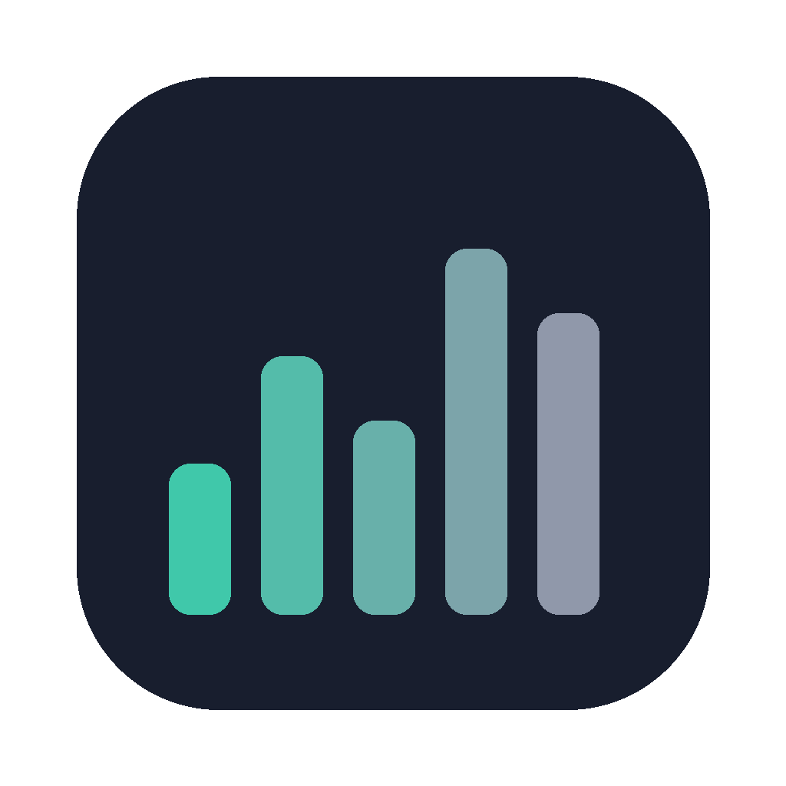

Monitoramento do sistema
Indicadores personalizáveis na barra, gráficos de histórico e processos agrupados por aplicativo.

OptiStatsAPP NATIVO PARA MAC · VERSÃO 1.0
Um monitor leve para a barra de menus do macOS, com CPU, GPU, memória, temperaturas, ventoinhas, disco, rede e bateria. Feito em Swift e AppKit para Apple Silicon.
macOS 13 ou posterior · Apple Silicon · Inglês e português brasileiro
Indicadores personalizáveis na barra, gráficos de histórico e processos agrupados por aplicativo.
Um agendador compartilhado lê somente o necessário. Fontes ocultas param de ser consultadas; os perfis Econômico, Equilibrado, Tempo Real e Personalizado controlam a frequência.
Leitura de RPM por padrão. Automático, Manual, 100% e Smart Boost opcionais exigem o helper e um teste de validação aprovado neste Mac.
Análise de pressão de memória, recomendações de aplicativos, ferramentas de disco e cache e gerenciamento opcional de serviços do macOS.
O OptiStats é um app independente inspirado no Stats, de exelban. Adapta abordagens selecionadas de SMC, sensores e controle de ventoinhas com os créditos MIT, usa arquitetura própria de amostragem por demanda e acrescenta orientação de RAM, manutenção de disco/cache e interface de Debloat.
Projetado para baixo consumo: leituras compartilhadas, histórico limitado e trabalho fora da thread da interface. Um consumo menor que o Stats ainda não foi comprovado em comparação controlada.
O catálogo de serviços, comentários e presets vem do mac-os-debloat, de Oleksandr Krupko (MIT). O OptiStats implementa sua própria interface para consultar serviços, escolher um preset, revisar alterações e aplicar ou restaurar ajustes compatíveis do launchd. Ele não executa o script Python do projeto original.
O Debloat é opcional e só roda por solicitação. Desativar serviços pode afetar funções do macOS. Atualizações do catálogo são downloads manuais do repositório original; o catálogo e o aviso MIT recebem os créditos no app.
O download usa assinatura ad-hoc e não é notarizado pela Apple. O macOS pode exigir aprovação em Ajustes do Sistema → Privacidade e Segurança. O comportamento das ventoinhas e o desempenho dependem do Mac e dos recursos ativos.
O monitoramento fica no seu Mac. Sem telemetria. A atualização opcional do catálogo conecta ao GitHub somente quando solicitada. Este site não usa analytics, fontes externas ou JavaScript de execução.
Apoiar Anglerson ☕